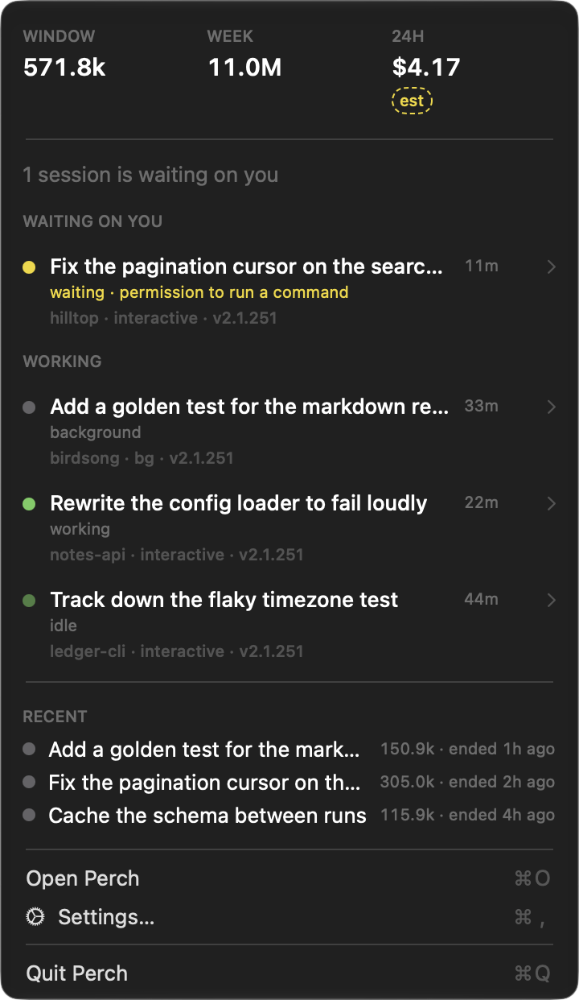

You'll know when something is stuck
Every session shows as working, idle, or waiting on you, with the terminal it belongs to. You can have Perch notify you once when a session has been waiting longer than you're happy with. Some projects are fine to leave sitting, so you can set a different limit on those, or turn it off for them entirely.
